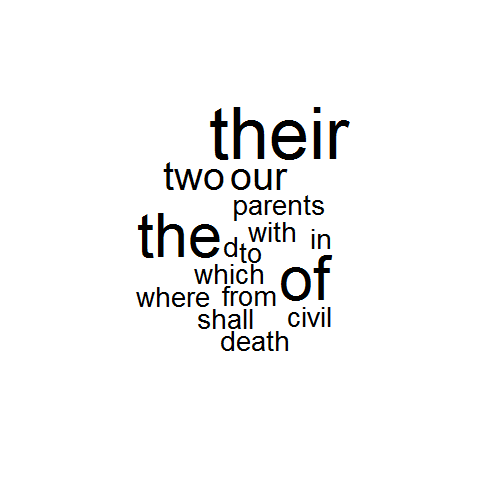
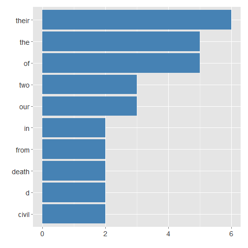

- text analyst is a shiny application
- find it on link https://rgrbic.shinyapps.io/appWords
- user enters text to be analyzed, app shows word frequency
R.G.
sidebarLayout which consists of sidebarPanel and mainPanelsidebarPanel contains short application description with the radio buttons where user selects desired plotmainPanel is divided into two rows:
wordcloud libraryggplot2 libraryserver.RgetWords <- function(text_object){
text <- tolower(text_object)
textF <- gsub("[[:punct:]]", " ", text)
textF <- gsub("\r\n|\r|\n", " ", textF)
textSplitted <- strsplit(textF," +")
textWords <- unlist(textSplitted)
words <- plyr::count(textWords)
wordsSorted <- words[order(-words$freq),]
wordsSorted
}
wordcloud is used:
ggplot2 is used